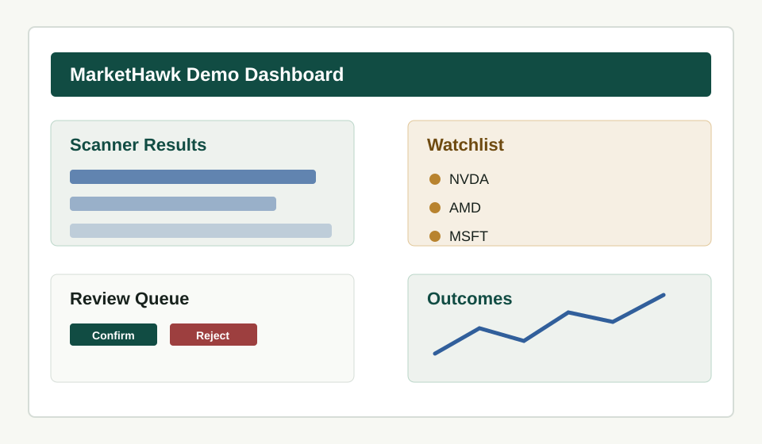

AI-First human-in-the-loop market scanning
MarketHawk
A market scanning cockpit for connecting market data, news, alerts, reviews, execution notes, journal entries, and outcomes.
Positioning
What MarketHawk is
- An AI-First scanner workflow for active traders who want a repeatable review loop.
- A local-first cockpit that connects scanners, alerts, reviews, journal notes, and outcomes.
- A way to make scanner ideas observable: what fired, what reviewers decided, and what happened next.
- A bridge between discretionary review and systematic evidence.
Boundaries
What MarketHawk is not
- Not a broker or broker replacement.
- Not a promise of profitable trading.
- Not a pure vectorized research engine.
- Not a substitute for risk controls, compliance, or human judgment.
Start here
Five-minute demo
Run MarketHawk with deterministic sample data. No IBKR, Polygon, X, or live credentials required.
make demoSystem shape
Architecture
Operating loop
Data flow
The outcome closes the loop: signal quality, follow-through, MFE/MAE, and review decisions inform future scanner tuning.
Visual tour
Screenshots and GIFs
Committed placeholders keep the docs self-contained. Replace them with real captures as the public demo stabilizes.

Competitive context
Comparison
| Tool | Primary positioning | Best at | MarketHawk difference |
|---|---|---|---|
| MarketHawk | AI-First human-in-the-loop scanner cockpit | Reviewing scanner signals, watchlists, alerts, outcomes, and journal context together | Optimized for the scanner-review-outcome loop rather than pure backtesting |
| Lean | Institutional-grade algorithmic trading platform | Multi-asset backtesting, live deployment, brokerage integrations | Lighter and focused on scanner operations and human review |
| NautilusTrader | Production-grade Rust-native trading engine | Low-latency, event-driven strategy execution | Prioritizes explainable scanner workflow over engine-level execution |
| vectorbt | Test thousands of ideas quickly | Vectorized research and parameter sweeps | Captures review decisions, alerts, and outcomes around operational scanner use |
| backtrader | Ease-of-use Python backtesting | Scriptable local strategy backtests | Adds a full-stack UI, alerting, review, and journal workflow |
| pysystemtrade | Systematic futures trading research | Portfolio/system research and futures workflows | Focuses on equity scanner signals and operator review workflows |
Next
Roadmap
Risk
Safety and risk
MarketHawk is research and workflow software. Trading involves substantial risk of loss. Sample data, fake outcomes, scanner scores, and demo records are illustrative only. Do not use demo settings for live trading.